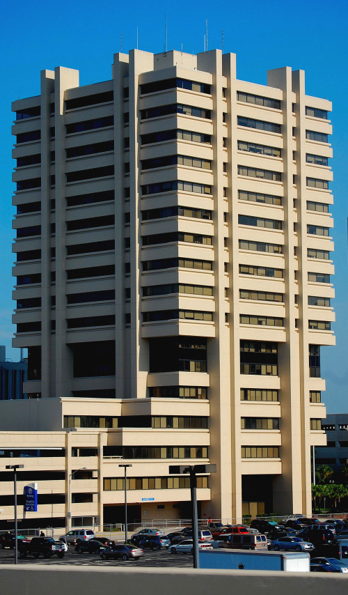
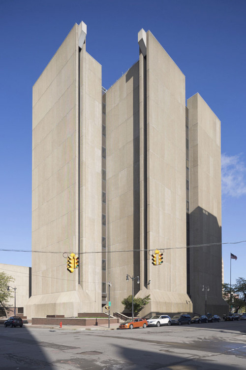
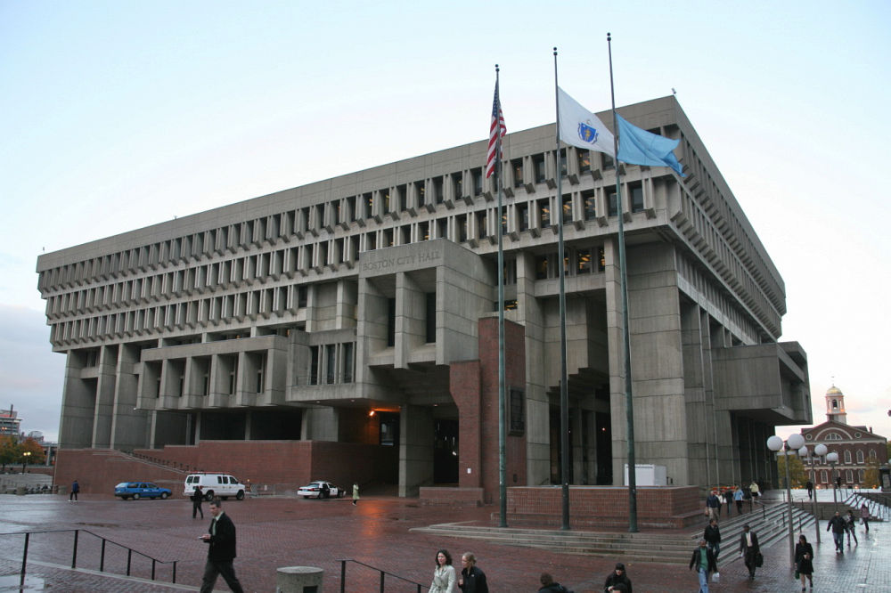
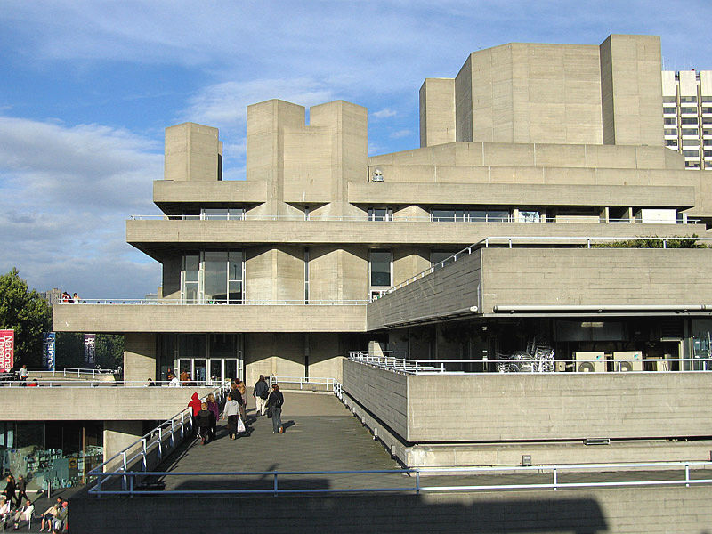

Kolejny odłam późnego modernizmu, który postał pod koniec lat 40. XX wieku. Na rozwój brutalizmu znaczny wpływ miał minimalizm prezentowany przez twórczość Miesa van der Rohe. Styl ten przyjął się szczególnie w Polsce, w okresie powojennym, gdy w tym stylu powstało wiele ważnych budowli na urbanistycznej mapie Warszawy i wielu innych miast w Polsce.
Edgar Hoover Building, Waszyngton
Brutalizm zakładał że najważniejsze są: przestrzeń, konstrukcja i uwrażliwienie na właściwości zastosowanych materiałów. Zmienił architekturę z abstrakcyjnej na ekspresyjną. Ideologowie brutalizmu głosili, że użycie materiałów w architekturze powinno być przemyślane na nowo. Trzeba odrzucić kontekst i metafory. Nie udawać, że masy zbrojonego betonu to coś więcej niż tylko materiał konstrukcyjny. Dlatego też brutalistyczne budowle pozbawione są jakiegokolwiek wykończenia, a z bliska można dostrzec teksturę drewna używanego do szalunków odciśniętego na surowym betonie.
Nazwa wywodzi się z francuskiego określenia brut, oznaczającego surowy i stosowanego wcześniej przez Le Corbusiera w odniesieniu do materiałów.
Gmach Royal National Theatre
Znajdziemy tutaj nieotynkowane mury, cegłę i masywne kamienne bloki. Brutalizm jest powiązany z modernizmem i minimalizmem a często nawet z nimi mylony. Wiele cech mają wspólnych - fascynacja geometrią, zbrojonym betonem i regularnością. Na tym tle brutalizm wyróżnia się czasem przerażającym a czasem fascynującym użyciem elementów całkowicie niepasujących do reszty struktury budynku oraz wspomnianą nieregularnością. Innym częstym elementem jest "wyrzucenie" na zewnątrz wielu funkcji budynków.
Najpopularniejsi architekci brutalizmu:
Chcesz dowiedzieć się więcej o brutalizmie? Sprawdź Wikipedię, klikając tutaj.
Poznaj więcej budynków charakterystycznych dla brutalizmu:
|
 Baptist Medical Pavilion na Florydzie |
 Buffalo City Court Building |
|
 Budynek Boston City Hall |
 Królewski Teatr Narodowy w Londynie |